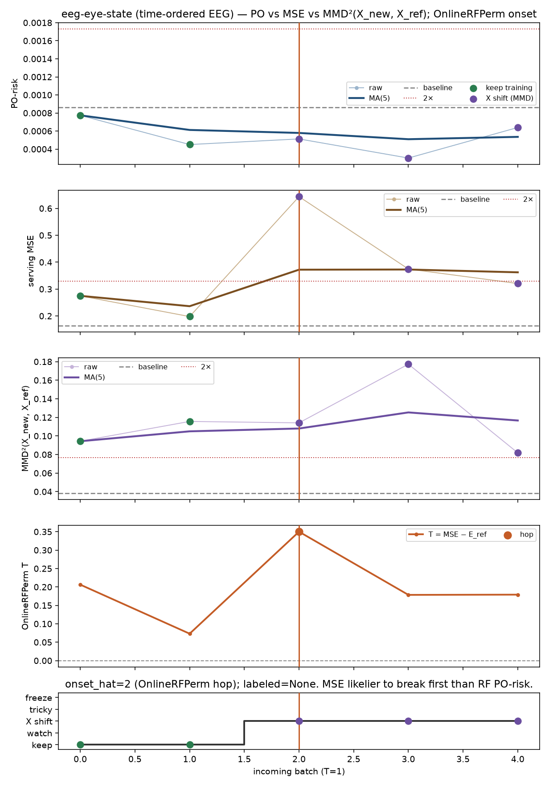
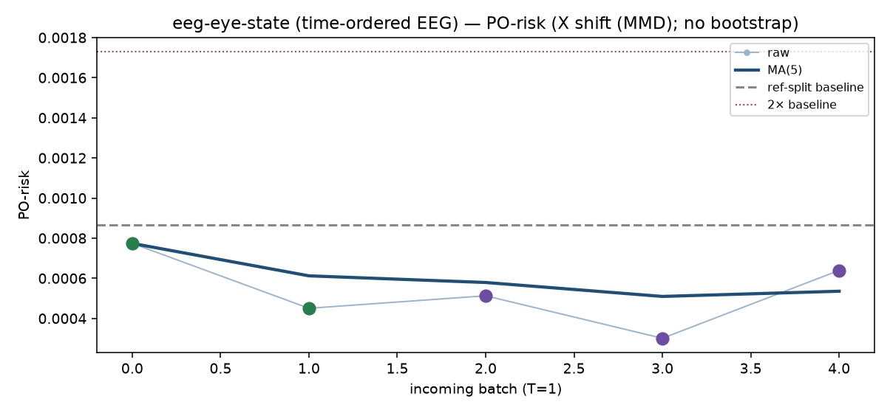
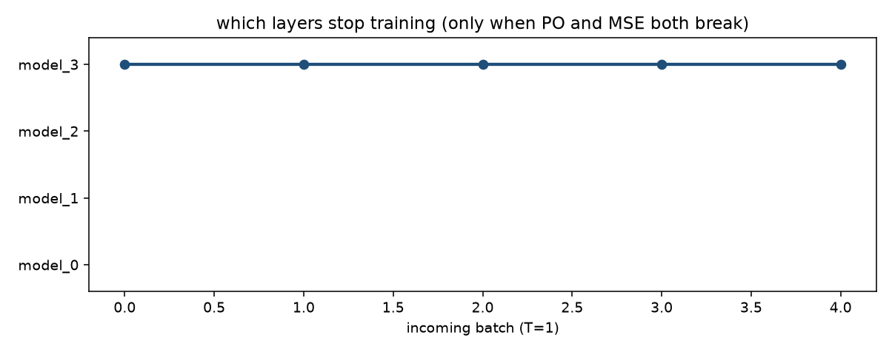

eeg-eye-state (time-ordered EEG). n_ref=6000, n_new=1500, hidden=[64, 32].
看板的输出就是：该冻结哪一层的 training（仅当 PO 和 MSE 都崩）。
PO-risk 用 RF，不该突然崩；更可能先崩的是 serving MSE。
MSE 崩了但 PO 正常 → 不是 concept drift。MMD 口径是 MMD²(X_new, X_ref)，
跟 reference batch 比，不是跟历史所有 batch 的 pairwise 均值，也不是上个 batch 的层 representation。
闭环：OnlineRFPerm 冻参考窗 RF，T=MSE−E_ref，last-two hop 标 shift-onset（onset_hat=2，labeled=None）。
看板说这是哪种 shift。PO 崩了模型没崩 → 再观察，先不冻。
两都崩 → 开 freeze-depth，model_i 只训 top i。
不做 online-bootstrap。
MSE 崩了但 PO 正常 — 不是 concept drift，看 MMD：X 在动



| t | PO-risk | PO MA | MSE | MSE MA | MMD vs ref | MMD MA | RFPerm T | hop | action | 冻结哪一层的 training |
|---|---|---|---|---|---|---|---|---|---|---|
| 0 | 0.000774 | 0.000774 | 0.2749 | 0.2749 | 0.09431 | 0.09431 | 0.2063 | keep training | 不冻任何一层的 training | |
| 1 | 0.0004505 | 0.0006122 | 0.1978 | 0.2363 | 0.1156 | 0.105 | 0.07313 | keep training | 不冻任何一层的 training | |
| 2 | 0.0005128 | 0.0005791 | 0.6436 | 0.3721 | 0.1141 | 0.108 | 0.35 | ● | X shift (MMD) | 不冻任何一层的 training |
| 3 | 0.000301 | 0.0005096 | 0.3746 | 0.3727 | 0.1773 | 0.1253 | 0.1785 | X shift (MMD) | 不冻任何一层的 training | |
| 4 | 0.0006392 | 0.0005355 | 0.3207 | 0.3623 | 0.08183 | 0.1166 | 0.1791 | X shift (MMD) | 不冻任何一层的 training |